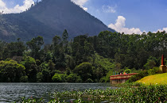
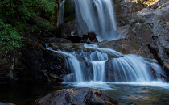
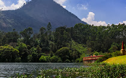
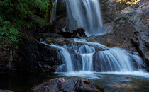

Idukki:The Spice Garden of Kerala
Idukki, a landlocked district of Kerala, is one of the most nature-rich areas in Kerala with more than half of the area covered with forest. This rugged hill resort is known for its wildlife sanctuaries, beautiful bungalows, tea factories, rubber plantations and forests.
Idukki's speciality lies in 650 feet long and 550 feet high arch dam across the Kuravan Kurathi mountain, which is the largest in the country. Anamudi, which is the highest peak in India, south of the Himalayas, is also located in Idukki. Idukki is one of the districts in the state that has abundant scope for promotion of eco-tourism if proper infrastructure and promotional activities are provided.
Idukki is Kerala's second largest district and has been blessed with numerous natural wonders. The high valleys and hill ranges of this landlocked region are fed by three major rivers - Periyar, Thalayar and Thodupuzhayar and their tributaries. Its forest still hosts many tribes and over half of the terrain is still covered with forests. People love going to the gigantic arch dam for getting its mesmerising view. Blessed with a wide range of trekking trail, each of them offers a spectacular view of the valley below and ranges above of Idukki. The place is also renowned for its exotic flora and fauna and one can come across many rare species while visiting Idukki

Top Destinations
 Eravikulam National Park
Eravikulam National Park
 Anamudi
Mattupetti Dam
Lakkam Waterfalls Munnar
Anamudi
Mattupetti Dam
Lakkam Waterfalls Munnar
Idukki, a landlocked district of Kerala, is one of the most nature-rich areas in Kerala with more than half of the area covered with forest. This rugged hill resort is known for its wildlife sanctuaries, beautiful bungalows, tea factories, rubber plantations and forests. Idukki's speciality lies in 650 feet long and 550 feet high arch dam across the Kuravan Kurathi mountain, which is the largest in the country. Anamudi, which is the highest peak in India, south of the Himalayas, is also located in Idukki. Idukki is one of the districts in the state that has abundant scope for promotion of eco-tourism if proper infrastructure and promotional activities are provided. Idukki is Kerala's second largest district and has been blessed with numerous natural wonders. The high valleys and hill ranges of this landlocked region are fed by three major rivers - Periyar, Thalayar and Thodupuzhayar and their tributaries. Its forest still hosts many tribes and over half of the terrain is still covered with forests. People love going to the gigantic arch dam for getting its mesmerising view. Blessed with a wide range of trekking trail, each of them offers a spectacular view of the valley below and ranges above of Idukki. The place is also renowned for its exotic flora and fauna and one can come across many rare species while visiting Idukki
Top Destinations
Eravikulam National ParkAnamudi